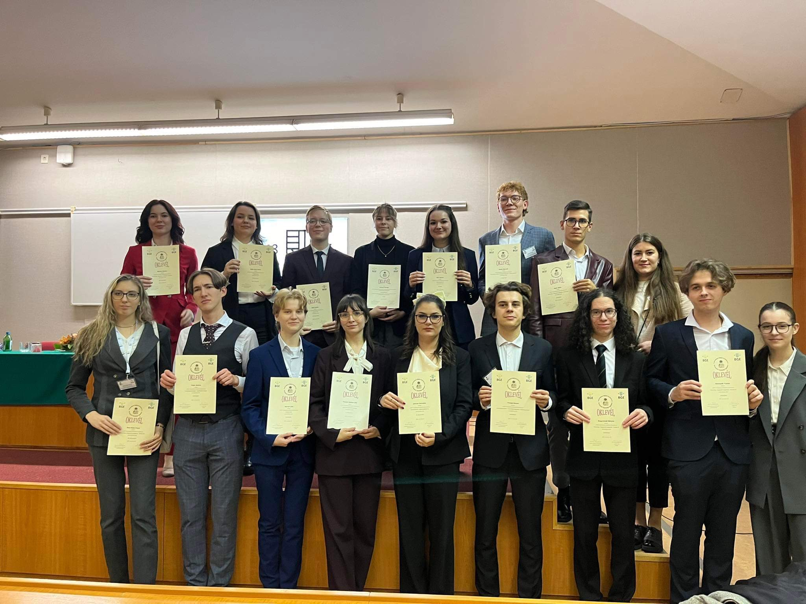

Conferences
A chronological overview of conference presentations through which I have presented and developed my research in labour economics, European integration, and international economic affairs.
2026
55th EBES – Eurasia Business and Economics Society Conference
April 2026
Budapest, Hungary · Online Presentation
Presentation:
The Effect of Japan's Ageing Population
on Wage Trajectories of Young Workers
Presentation Type: Oral presentation of master's thesis research
- Presented a draft of my master's thesis at the 55th Conference of the Eurasia Business and Economics Society (EBES).
- Presented empirical research examining how the growing presence of elderly regular workers is associated with wage trajectories within Japan's regular employment system.
- Discussed whether early-career workers aged 20–29 experience a systematically different wage response from the broader regular workforce.
- Presented research based on individual-level Japanese panel data combined with education-group-specific demographic measures.
- Received international academic feedback on the research during the development of the final master's thesis.
- Conference participation was supported by Waseda University's Overseas Research Travel Grant Program for Upper-level Undergraduate and Graduate Students.
2025
Research Day Conference
Budapest Business School (BGE)
July 2025 · Budapest, Hungary
Presentation:
The Impact of Population Aging on Youth Wages in Japan:
Evidence from Japanese Panel Data
Presentation Type: Oral presentation of original research
- Presented original empirical research on the relationship between population ageing and wage outcomes in Japan.
- Examined whether the increasing concentration of older workers in higher-income positions may be associated with weaker wage development among younger cohorts.
- Presented research based on the Japanese Panel Study of Employment Dynamics (JPSED).
- Discussed the implications of demographic ageing for intergenerational wage dynamics and the Japanese labour market.
- The research was subsequently included in the Researchers' Day Conference Proceedings.
2024
20 Years of Central and Eastern Europe in the European Union International Conference
July 2024
Presentation:
Fostering Long-term Sustainability of Hungary
through the European Union's Single Market
Presentation Type: Oral presentation of original research proposal
- Presented an original research proposal focusing on Hungary's long-term economic sustainability within the European Union.
- Examined the role of the European Single Market as a potential framework for supporting Hungary's long-term economic development.
- Developed the research within the broader context of twenty years of Central and Eastern European membership in the European Union.
- Presented the proposed research direction in an international conference environment.
2023
30 Years in the European Union
Budapest Business University
November 2023 · Budapest, Hungary
Presentation:
Jointly or Separately:
A Comparative Analysis of the Accession Prospects
of Serbia and Montenegro
Presentation Type: Oral presentation of original research
- Presented comparative research examining the European Union accession prospects of Serbia and Montenegro.
- Compared progress in EU accession negotiations and the fulfilment of the Copenhagen and Maastricht criteria.
- Examined economic preparedness, political commitment, institutional development, and public attitudes toward European integration.
- Discussed whether Serbia and Montenegro should continue toward EU membership jointly or according to their individual progress.
- The research was later published as a book chapter in European Unity: From Maastricht to Modern Union in 2024.
BGE Scientific Students' Associations Conference (TDK)
Budapest Business University
November 2023 · Budapest, Hungary
Presentation:
Shifting or Staying:
The Job-Hopping Phenomenon on the Hungarian
and Japanese Labour Market
Presentation Type: Oral presentation of original research
Recognition: 1st Place – Labour Market Category
- Presented original comparative research on job-hopping behaviour among young people in Hungary and Japan.
- Investigated the employment expectations and job-mobility preferences of Hungarian and Japanese university students.
- Conducted primary survey research at Budapest Business University and Kanda University of International Studies.
- Analysed a combined sample of 293 student responses using quantitative and qualitative approaches.
- Examined whether cultural differences or broader generational and labour-market factors better explain young people's willingness to change employers.
- Awarded 1st Place in the Labour Market category of the BGE TDK Conference.
- A shortened version of the research was subsequently published in the 2024 BGE TDK conference proceedings.
